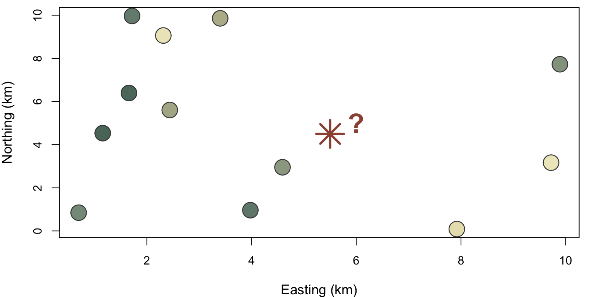
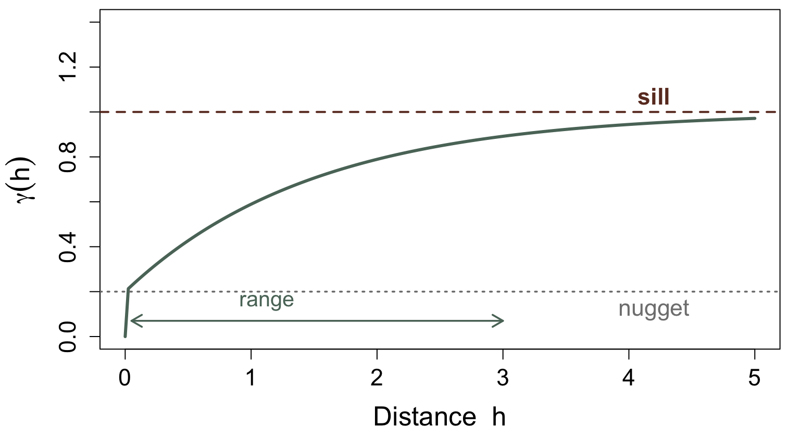
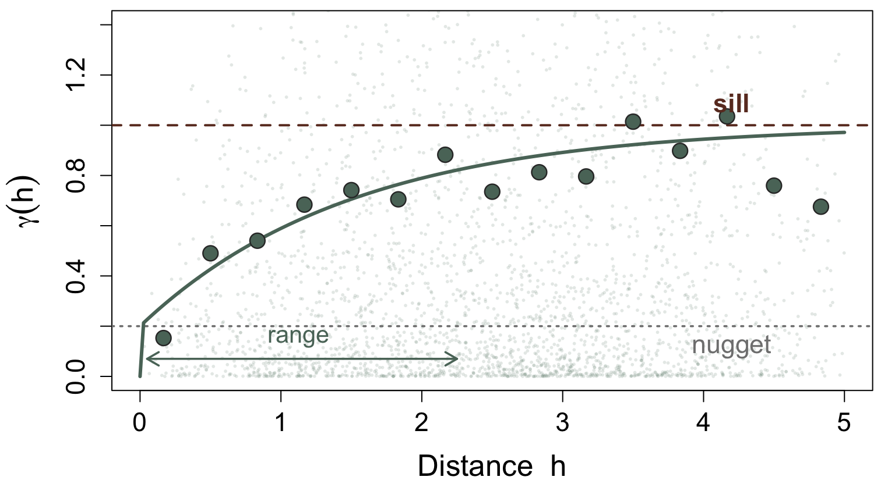
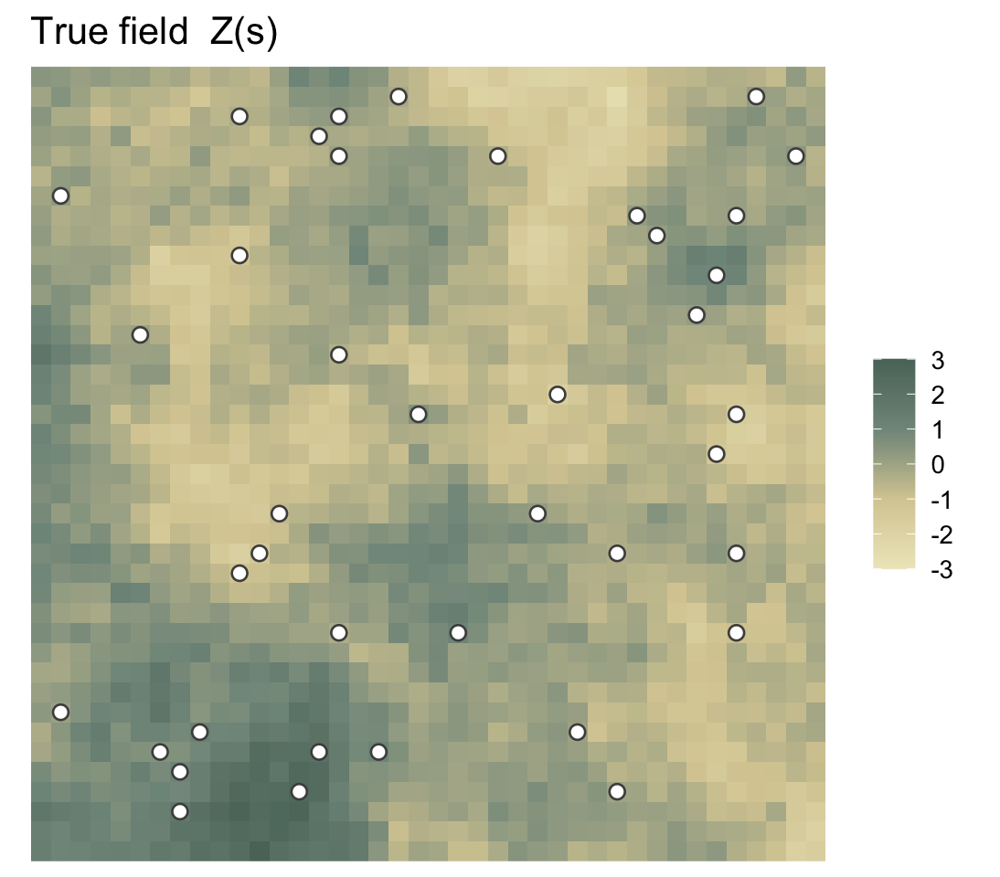
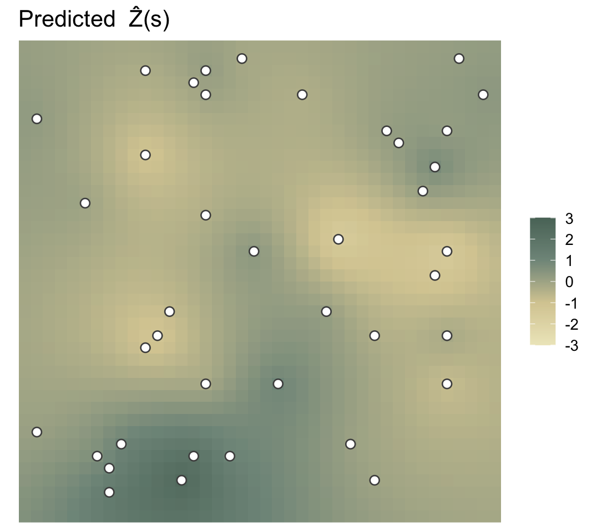
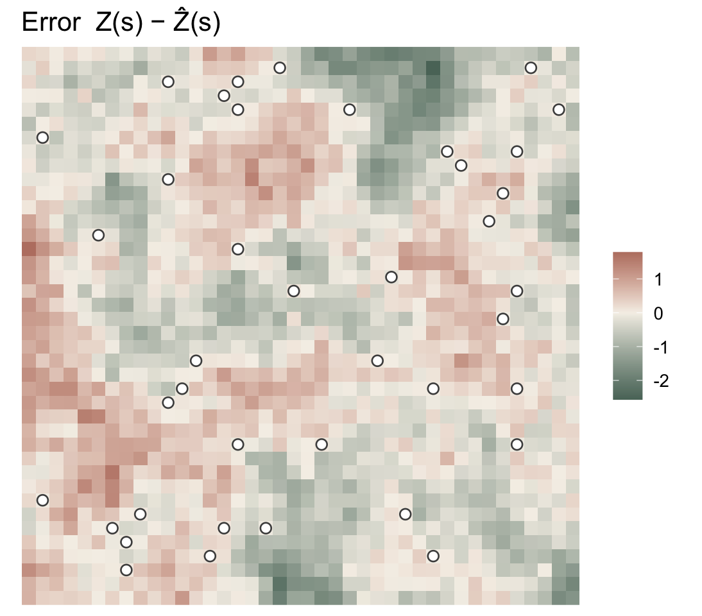
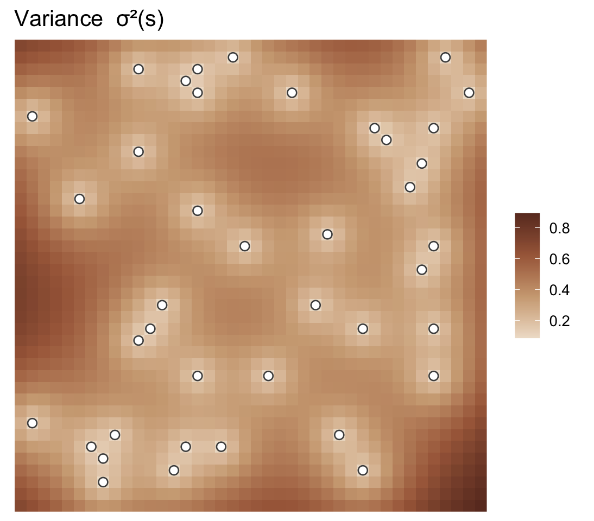

Kriging Demystified
Spatial prediction without the mystery
Lachlan Astfalck
UNSW Sydney | STREAM
2026-05-22
Witwatersrand goldfields, 1951.
You’re working the Witwatersrand goldfields of South Africa — at the time, the world’s richest known gold deposits.
One question: where is the gold?
Witwatersrand goldfields, 1951.
You’ve drilled bore holes at a handful of sites. Each core tells you the gold grade at that exact spot.
The question keeping you up at night: Estimate the grade at an undrilled location — and stake a mining operation on it. How confident should you be?
The problem: local estimates exaggerate
You sample a few nearby places and estimate a mining block.
\[\widehat V_{\text{local}} \approx V_{\text{block}}\]
But the local estimate is a noisy proxy, not the block itself.
- High estimates are often too high.
- Low estimates are often too low.
Why? Because extreme estimates are partly geology, partly sampling luck.
\[E[V_{\text{block}} \mid \widehat V_{\text{local}}] \neq \widehat V_{\text{local}}\]
This is spatial regression to the mean.
Meet Danie Krige
Daniel Gerhardus Krige (1919–2013)
Mining engineer. Part-time MSc student. All-round good guy.
In 1951, at 32 years old, he published a master’s thesis that would redefine how we think about spatial data.
“A statistical approach to some mine valuation and allied problems on the Witwatersrand.”
What Krige did: regress the estimate back
Krige compared:
\[ \text{development estimate} \quad \longrightarrow \quad \text{eventual mined value} \]
and found the relationship was flatter than the 45° line.
\[E[V \mid \widehat V] = m + b(\widehat V - m), \qquad 0<b<1 \]
So he corrected the local estimate by shrinking it toward the mine mean:
- A high estimate stays high — just less extreme.
- A low estimate stays low — just less extreme.
Krige’s insight: don’t trust the local number at face value; calibrate it against what actually gets mined.
Near Things Are More Similar
Tobler’s First Law of Geography (1970):
“Everything is related to everything else, but near things are more related than distant things.”
| Domain | The spatial pattern |
|---|---|
| Mining | Adjacent ore samples tend to have similar grades |
| Weather | Nearby stations have correlated temperatures |
| Property | Houses on the same street have similar prices |
| Medicine | Neighbouring postcodes have correlated disease rates |
This spatial coherence is not just interesting — it is exploitable.
The how of spatial similarity is exactly what Krige measured, and what Matheron later formalised into an optimal prediction method.
Enter Georges Matheron
Georges Matheron (1930–2000), Mathematician at the École Nationale Supérieure des Mines, Paris.
He read Krige’s work in the late 1950s and asked a question Krige never had:
“Among all possible weighted averages, which one has the smallest expected error?“ — and can we derive it rigorously?
Over the following decade he built the mathematical foundation of geostatistics and named the optimal predictor kriging in Krige’s honour.
Measuring Spatial Similarity
First, Matheron needed to turn Krige’s empirical observation into a number; for pairs of locations separated by distance \(h\), he asked:
On average, how different are values at those two locations?
This is the variogram:
\[\gamma(h) = \frac{1}{2}\,\text{Var}\!\left(Z(\mathbf{s} + h) - Z(\mathbf{s})\right)\]
- \(\gamma(h)\) small \(\to\) nearby things are alike
- \(\gamma(h)\) large \(\to\) distant things are unrelated
- \(\gamma(h)\) eventually flattens as \(h\) gets big — correlation runs out
The Variogram

The Variogram in Practice

In practice: bin all pairs of observations by distance, compute their squared differences, and average. That is the empirical variogram — fit a smooth curve to it, and you have your covariance model.
The shape tells a story: steep rise \(\to\) short-range correlation; gradual rise \(\to\) smooth long-range field; nugget-only \(\to\) spatial white noise (unpredictable).
What Does “Best” Mean?
Our prediction is a weighted sum of observations:
\[\hat{Z}(\mathbf{s}_0) = \sum_{i=1}^{n} \lambda_i\, Z(\mathbf{s}_i)\]
Given a variogram/covariance structure, we want the weights \(\boldsymbol{\lambda}\) that make this the Best Linear Unbiased Predictor.
Best
Linear
Unbiased
Predictor
Predictor — we want a number: the best guess at \(Z(\mathbf{s}_0)\).
Linear — our guess must be a weighted sum of observations. No black-box transforms, no magic.
Unbiased — we cannot afford to be systematically wrong.
Best — among all linear unbiased predictors, ours minimises the mean squared error.
One slide of derivations
Our prediction \(\hat{Z}(\mathbf{s}_0) = \sum_i \lambda_i Z(\mathbf{s}_i)\) is a weighted average. We want weights \(\boldsymbol{\lambda}\) that minimise the mean squared error of that guess:
\[\text{MSE} = E\left[\bigl(\hat{Z}(\mathbf{s}_0) - Z(\mathbf{s}_0)\bigr)^2\right] = \boldsymbol{\lambda}^\top \mathbf{C}\boldsymbol{\lambda} \;-\; 2\boldsymbol{\lambda}^\top\mathbf{c}_0 \;+\; C(\mathbf{0})\]
Here \(\mathbf{C}_{ij} = C(\mathbf{s}_i, \mathbf{s}_j)\) is the covariance between observation pairs, and \((\mathbf{c}_0)_i = C(\mathbf{s}_i, \mathbf{s}_0)\) is the covariance between each observation and the target — both read straight off the variogram. Minimise over \(\boldsymbol{\lambda}\) subject to \(\sum_i \lambda_i = 1\) \(\;\Rightarrow\;\) kriging system.
Prediction: \(\displaystyle\hat{Z}(\mathbf{s}_0) = \mathbf{c}_0^\top \mathbf{C}^{-1} \mathbf{Z}\)
Uncertainty: \(\sigma^2_K(\mathbf{s}_0) = C(\mathbf{0}) - \mathbf{c}_0^\top \mathbf{C}^{-1} \mathbf{c}_0\)
Simulate a true field
sim_field <- function(n = 30, phi = 3, sigma2 = 1, seed = 42) {
set.seed(seed)
# Make the grid
grd <- expand.grid(
x = seq(0, 10, length.out = n),
y = seq(0, 10, length.out = n)
)
# Create a distance matrix
D <- as.matrix(dist(grd[, c("x", "y")]))
# Compute elementwise covariances
Sig <- cov_exp(D, sigma2, phi)
diag(Sig) <- diag(Sig) + 1e-6
# Sample from normal
grd$z <- as.vector(t(chol(Sig)) %*% rnorm(nrow(grd)))
grd
}
# Simulate a "true" spatial field from a GP
field <- sim_field(n = 40, phi = 3)
# Observe 20 randomly sampled locations
obs <- field[sample(nrow(field), 40), ]
The predictive mean
# How correlated are the observations with each other?
C <- cov_exp(dist(obs), phi = 3)
diag(C) <- diag(C) + nugget # small stabiliser on diagonal
# How correlated is each observation with the target s0?
c0 <- cov_exp(dist(obs, s0), phi = 3)
# Find the optimal weights — minimise prediction error
# subject to the weights summing to 1 (unbiasedness)
K <- rbind(cbind(C, 1), c(rep(1, n), 0))
sol <- solve(K, c(c0, 1))
lam <- sol[1:n] # one weight per observation
m <- sol[n + 1] # Lagrange multiplier (unbiasedness)
# Prediction: a weighted average of the observed values
pred <- c0 %*% solve(C) %*% obs$z
# Uncertainty: drops out of the same solve — no extra work
var <- sigma2 - c0 %*% solve(C) %*% t(c0)
Prediction vs Reality


Error vs Uncertainty


What Kriging Gives You
The prediction surface
- Passes exactly through every observation
- Smooth where the variogram says the field is smooth
- Regresses toward the global mean far from data
The variance surface
- Zero at observation locations — by construction
- Grows with distance from data
- Depends on configuration, not on values
- Use it to design sampling campaigns before collection
A 95% interval at any location: \(\hat{Z}(\mathbf{s}_0) \pm 1.96\,\sigma_K(\mathbf{s}_0)\).
Comes free from the linear system… (with assumptions)
The Kriging Family
| Variant | When to use it |
|---|---|
| Ordinary Kriging | Unknown constant mean — the safe default |
| Simple Kriging | Known mean (rare in practice) |
| Universal Kriging | Mean follows a spatial trend (elevation, temperature lapse rate) |
Ordinary kriging is the right starting point for almost every problem. Simple kriging is mainly a pedagogical tool. Universal kriging adds a trend surface — useful when you have a clear directional gradient.
Advanced Kriging Variants
| Variant | When to use it |
|---|---|
| Cokriging | Multiple correlated variables — use cheap secondary data to improve the primary prediction |
| Block Kriging | Predict spatial averages, not point values (e.g. average grade over a mining block) |
| Indicator Kriging | Binary or categorical data; exceedance probability maps |
And if you want a fully probabilistic treatment: Gaussian Process regression is kriging with a prior. The prediction formula is identical; what changes is how parameter uncertainty is propagated.
Kriging is Everywhere
Same idea. Different names. Discovered independently across fields.
- Kriging — geostatistics, mining, hydrology, climate
- Gaussian Process regression — machine learning, surrogate modelling
- Kalman filter — sequential kriging in time; engineering, navigation, finance
- Wiener filter — signal processing, audio, communications
- Bayes linear — crazy cats who don’t use probability to do statistics
The shared core:
Use a model of correlation structure to make the best possible linear prediction at unobserved locations.
The equations are the same. The language is different.
Practical Software
R
gstat— variogram fitting, OK/UK/CoK, the workhorsefields— thin-plate splines and kriging, great visualsgeoR— Bayesian geostatisticssf+terra— spatial data wrangling
Python
PyKrige— clean, dedicated kriging librarygstools— variogram fitting + kriging, modern APIscikit-learn—GaussianProcessRegressorrasterio+geopandas— spatial data handling
Starting out in R: gstat + sf is the most mature stack. Fit a variogram with fit.variogram(), predict with krige(). A full ordinary kriging workflow in four lines.
Technicalities
Things I glossed over — for the record:
Stationarity. We assumed \(\text{Cov}(Z(\mathbf{s}), Z(\mathbf{s}')) = C(\mathbf{s}-\mathbf{s}')\) — covariance depends only on separation, not location (second-order stationarity). Ordinary kriging actually only requires intrinsic stationarity: \(\text{Var}(Z(\mathbf{s}+h) - Z(\mathbf{s}))\) depends only on \(h\).
Fitting the covariance. We plug in an estimated \(\hat{C}(h)\). The result is empirical kriging — no longer strictly optimal, and prediction variances are underestimated because parameter uncertainty is not propagated.
Common covariance models. Exponential \(\sigma^2 e^{-h/\phi}\); Gaussian \(\sigma^2 e^{-(h/\phi)^2}\); Matérn \(\sigma^2 M_\nu(h/\phi)\) with smoothness parameter \(\nu\) (Matérn-½ = Exponential, Matérn-∞ = Gaussian). Matérn is the preferred choice in practice.
Gaussianity. The BLUP holds without any distributional assumption. But for prediction intervals \(\hat{Z} \pm 1.96\,\sigma_K\) to be exact, the field must be Gaussian. This is where Gaussian Process regression is strictly superior.
Nugget effect. A positive nugget makes kriging an approximate (not exact) interpolator — it no longer passes exactly through the observations. Often more realistic: it models micro-scale variability and measurement error.
Anisotropy. Spatial correlation often differs by direction — stronger along a river than across it. Geometric and zonal anisotropy can be incorporated into the covariance model.
Bayesian kriging. GP regression places a prior over the covariance parameters and propagates uncertainty properly. The conditional mean is identical to the kriging predictor; the posterior variance is larger — properly accounting for parameter uncertainty.
Questions?
Slides and code: astfalckl.github.io/presentations
STREAM: unsw.edu.au/science/our-schools/maths/our-research/stream
l.astfalck@unsw.edu.au
Lachlan Astfalck | UNSW Spatio-Temporal Research for Environmental Analysis and Modelling